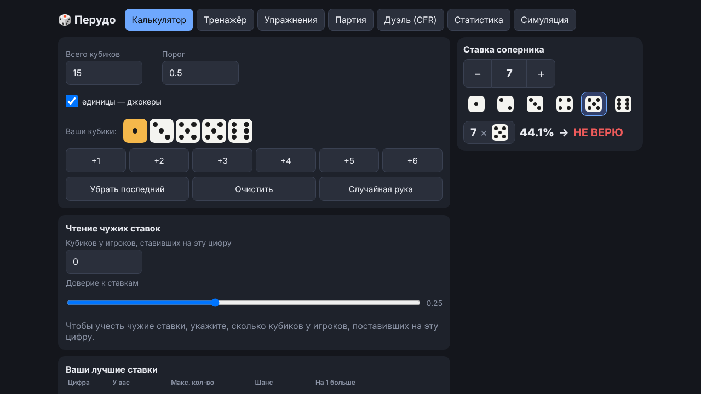
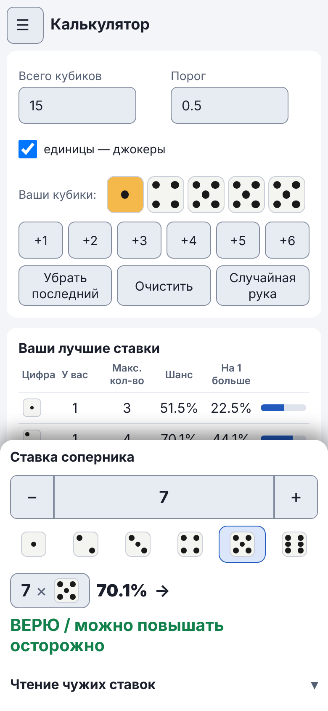

Руководство / Калькулятор
Калькулятор
Отвечает на главный вопрос игры: верить ставке соперника или нет.
Как пользоваться
- Укажите всего кубиков на столе (по умолчанию 15) и отметьте, считаются ли единицы джокерами.
- Введите свои кубики: нажимайте цифры на панели или возьмите «Случайную руку».
- Введите ставку соперника, например «7 × 5».
- Получите шанс, что ставка верна, и вердикт: «Верю» или «Не верю».

Дополнительные поля
| Поле | Что значит |
|---|---|
| Порог | Шанс, начиная с которого ставка считается правдоподобной. По умолчанию 0,5, то есть 50%. От порога зависит вердикт. |
| Кубиков у игроков, ставивших на эту цифру | Если соперники уже называли эту цифру, укажите, сколько кубиков у них, по вашему мнению, на ней. Появится вторая оценка «с учётом чтения ставок». |
| Доверие к ставкам | Насколько сильно учитывать эту подсказку (по умолчанию 0,25). |
Ваши лучшие ставки
Ниже находится таблица «Ваши лучшие ставки». По каждой цифре в ней видно, сколько у вас таких кубиков, какое максимальное количество ещё проходит порог, каков его шанс и каков шанс ставки «на один больше». Она помогает выбрать собственную ставку, когда ходит ваша очередь.
На телефоне
Ставка и результат лежат в панели у нижнего края экрана, в зоне большого пальца. На широком экране это правая колонка.
